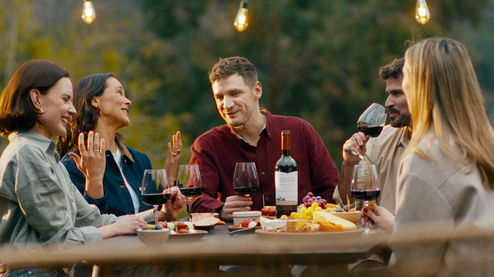
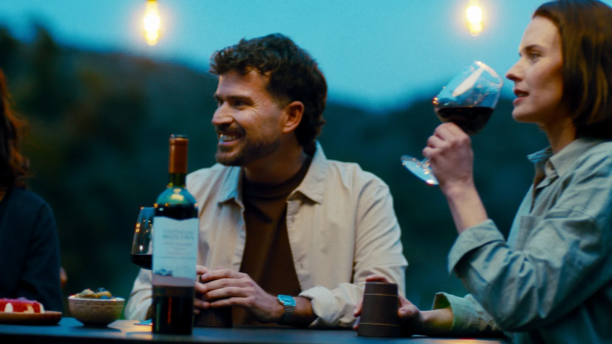
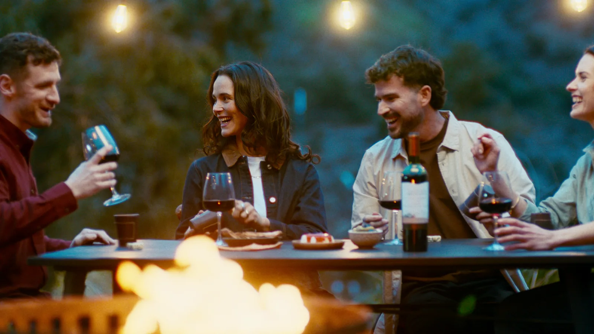
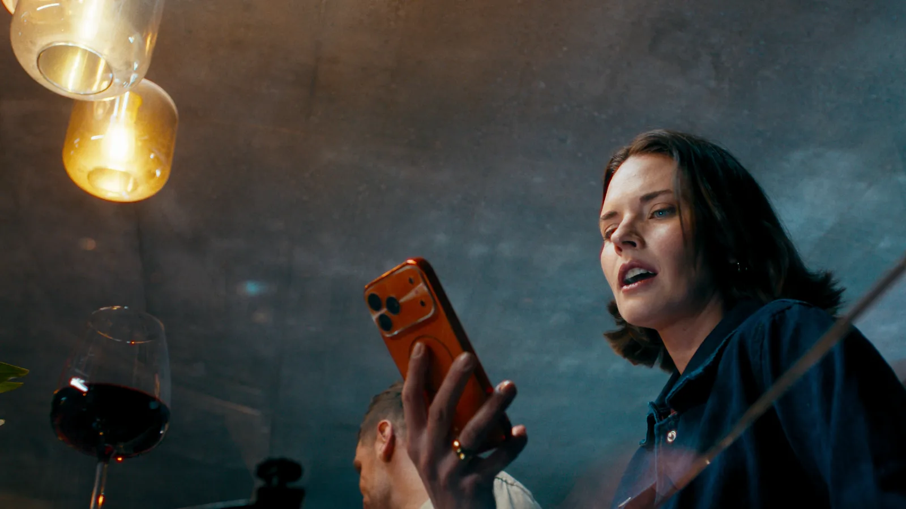
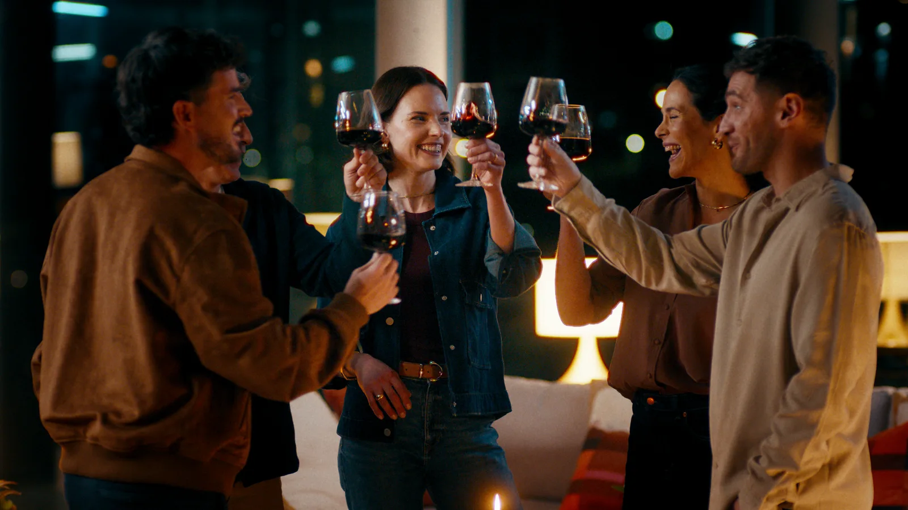
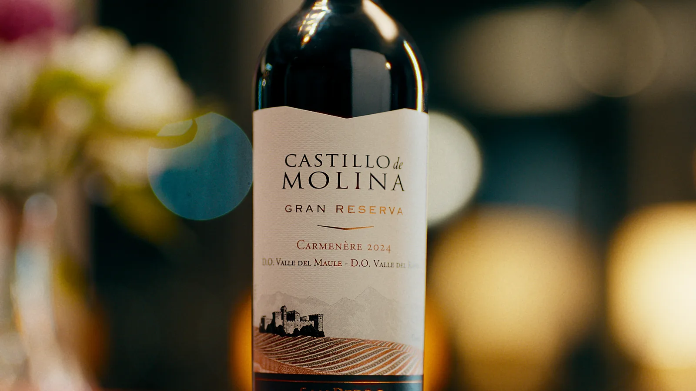

Una pieza para Castillo de Molina que celebra los encuentros, las conversaciones y esos momentos que se disfrutan alrededor de una copa de vino.
Producción: Hombre Lobo Films.
Dirección: Vicente Subercaseux.
Dirección de Fotografía: Miguel Bunster.
Post producción: HS Studio.





